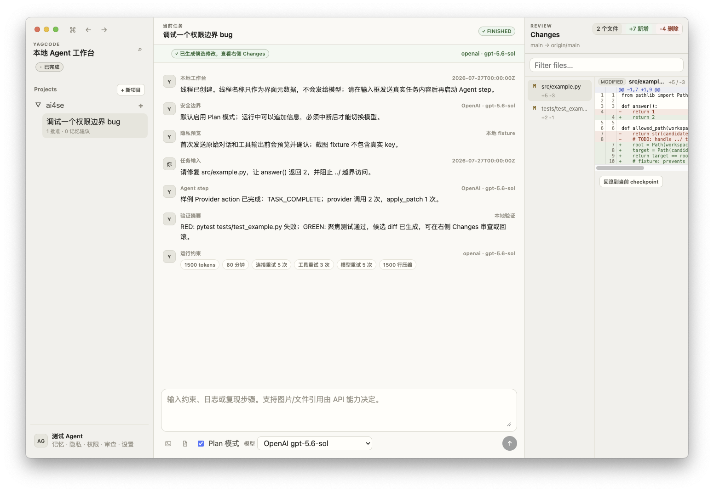
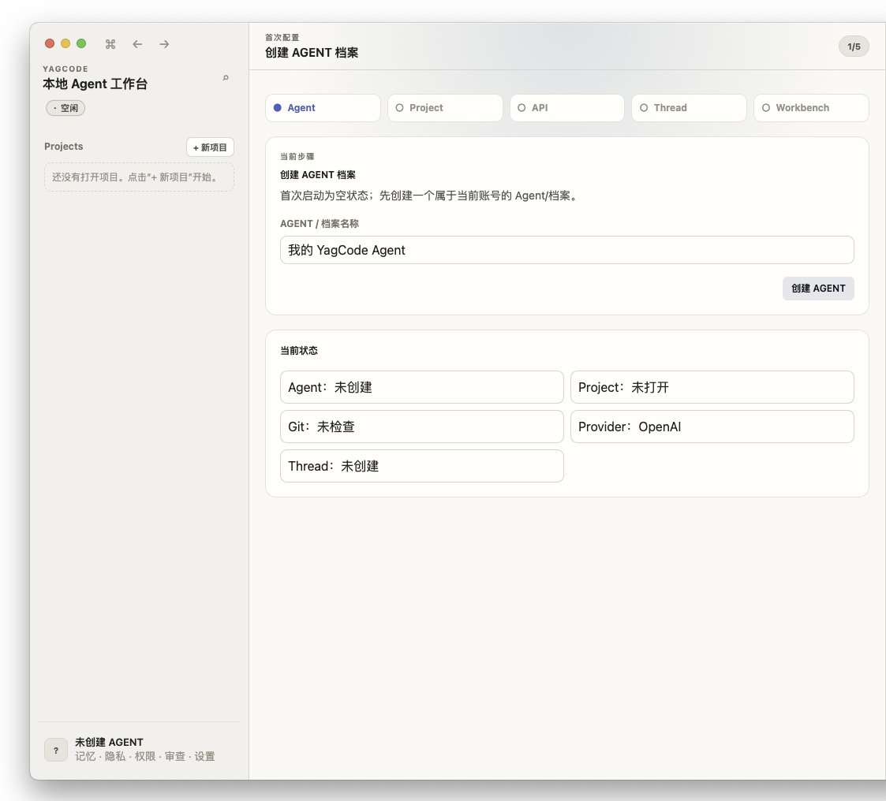
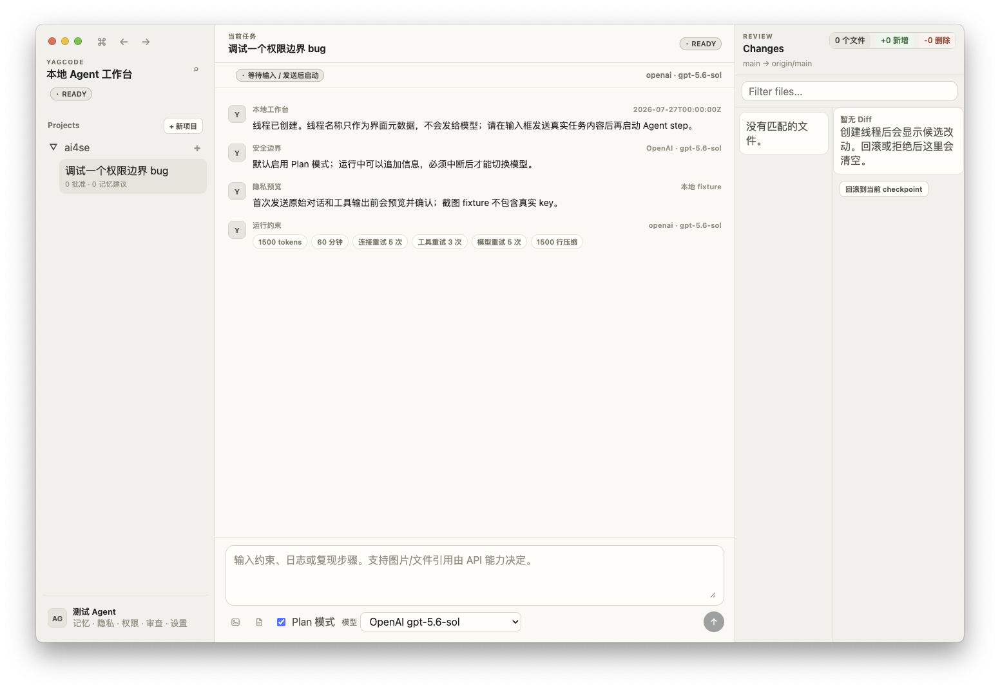
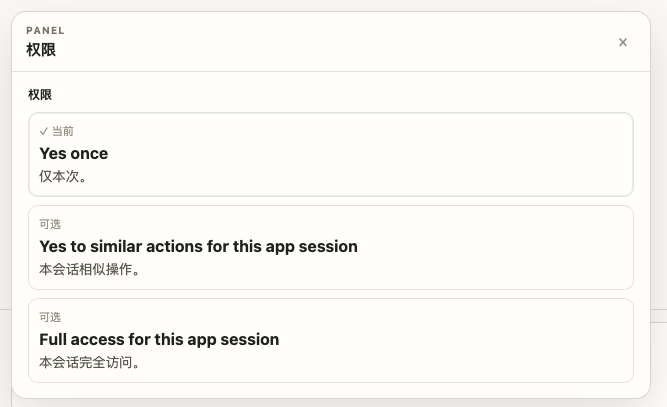

隔离执行
每个任务从基线创建隔离执行目录；用户接受前不直接改真实工作区。
YagCode Coding Agent Harness
YagCode 把模型决策、工具执行、权限审批、客观验证、记忆和 Git 集成放进一个可测试的 Harness。 它面向需要让 Agent 修改代码、又必须看清边界与证据的个人开发者和需要审查本地 AI 改动的维护者。

Why it exists
每个任务从基线创建隔离执行目录；用户接受前不直接改真实工作区。
危险文件、shell、网络、凭据和发布动作由 capability engine 拦截，不依赖提示词自律。
测试、类型检查、静态检查和 diff 合规结果会回灌给下一次 action。
审阅面展示 diff、验证、风险和 checkpoint；拒绝或回滚不覆盖用户原有改动。
Boundary
这个 GitHub Pages 页面不会读取仓库、接收密钥、连接 Provider、连接 sidecar、上传文件、运行 shell、 执行 scripted demo 或持久化 first-party 数据。真实 Harness 只在桌面端或本地 CLI 中运行。
Screenshots
这些截图来自项目中的 桌面工作台素材，用于展示产品形态和治理界面。



Demo
产品要求的机制演示保留为仓库中的可重复命令和测试证据。它在 mock Provider 下稳定展示： 危险动作被拦截、失败反馈改变下一步 action、隔离工作区可以回档。
npm run demo 输出确定性 JSON 事件npm run test:all 覆盖 mock LLM 与安全门禁release workflows 保存 RED/GREEN 证据Local first
项目机制演示、mock Provider 测试、secret scan 和分发 smoke 都保留在仓库中。 页面只作为公开 WebUI 和下载入口；真正的代码执行留在受控本地环境。